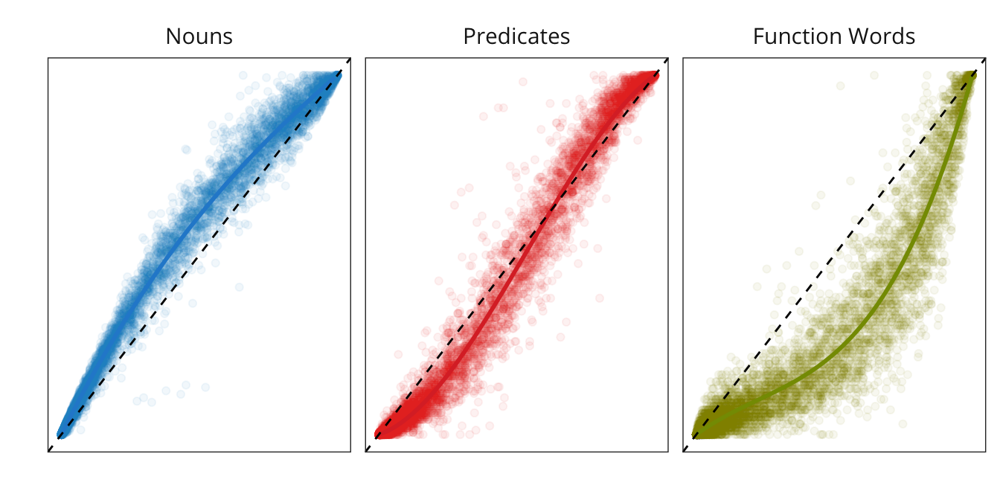
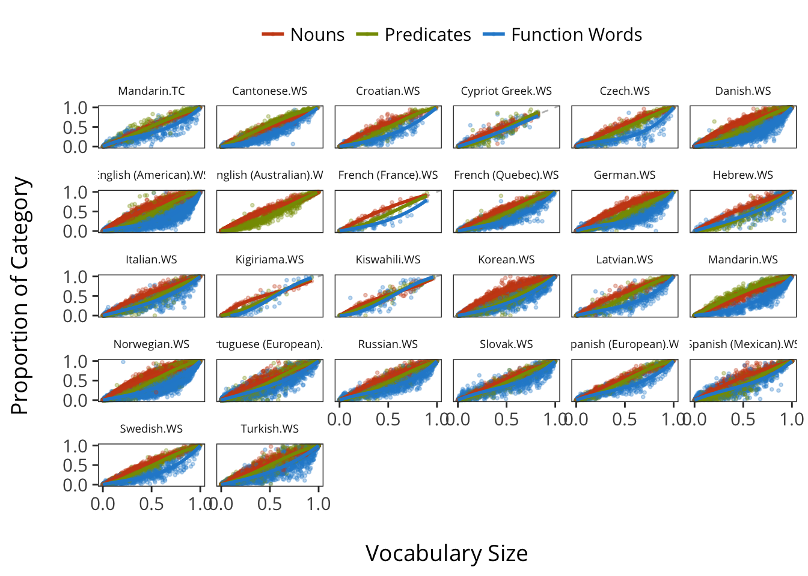
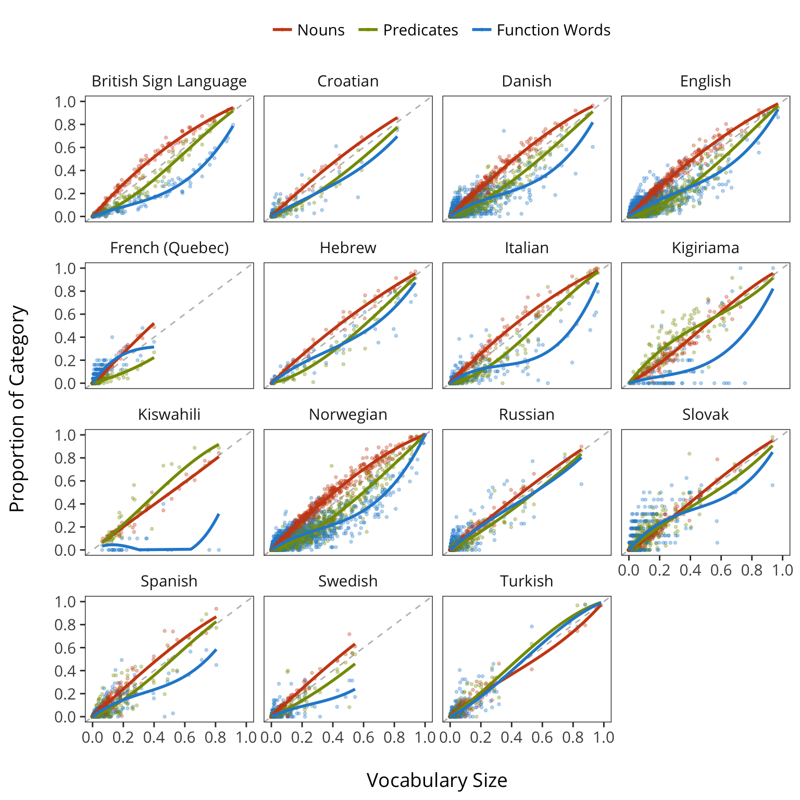
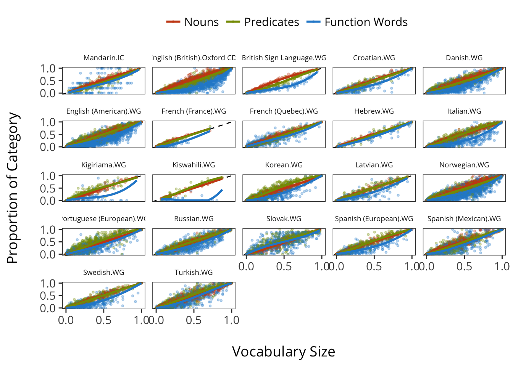
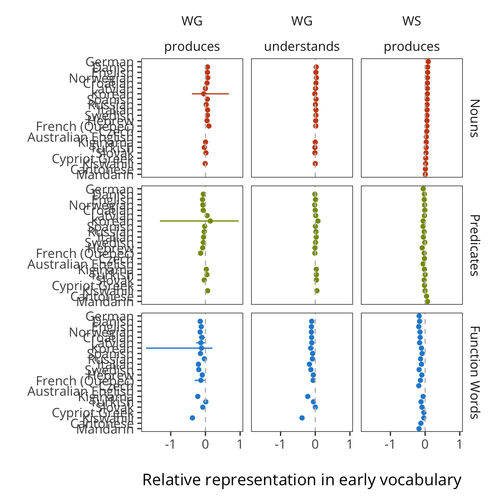
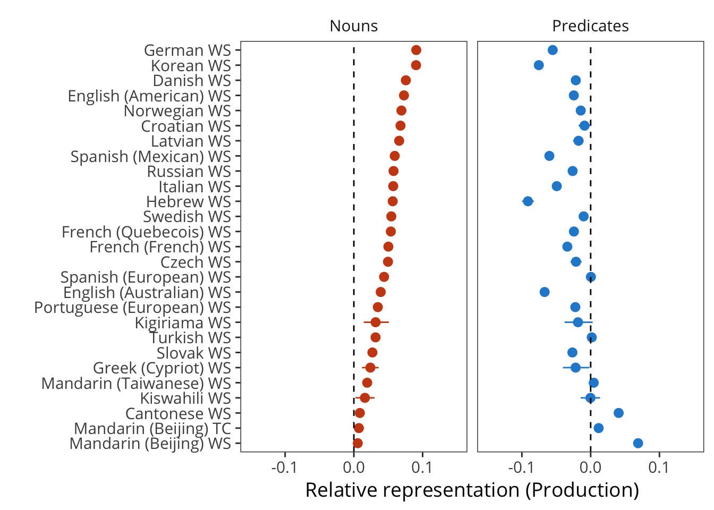
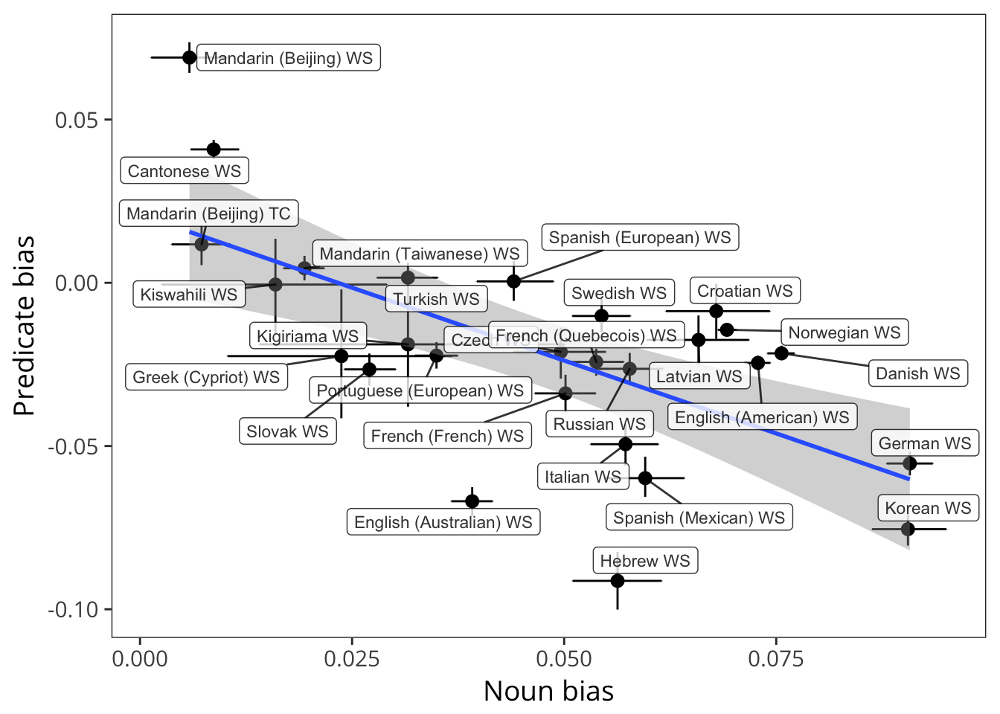

5 Categorical Composition: Syntax
This chapter focuses on splitting vocabulary data into syntactic categories and analyzing consistency and variability across languages in the acquisition of these. We quantify the “noun bias” across languages. In addition, we report the degree of bias for or against verbs and closed-class words.11
5.1 Introduction
Over the first few years, young children are exposed to a “sea of words” across many different contexts and from many different people (J. Goodman, Dale, and Li (2008), p. 516). And despite the fact that children vary tremendously in the rate at which they learn, the first words that children utter are strikingly consistent (Tardif et al. 2008,Schneider, Yurovsky, and Frank (2015)): they tend to talk about important people in their life (“mom”, “dad”), social routines (“hi”, “uh oh”), animals (“dog”, “duck”), and foods (“milk”, “banana”) (J. Goodman, Dale, and Li (2008), (???), Nelson (1973), (???)). Soon thereafter, they begin to add verbs (“go”) and adjectives (“pretty”) in greater proportions than earlier in development and may even begin to use closed-class forms, such as determiners (“the”). These patterns seem to suggest a developmental course that follows distinct “waves” of learning for words from different syntactic classes. That is, along with early social routines, nouns tend to predominate early vocabularies, while other types of words, such as predicates and closed class forms, are learned later.
Bates et al. (1994) characterized these patterns of vocabulary composition in the following way. Figure 4.1 shows average vocabluary composition of nominals, predicates and closed class forms as a function of children’s vocabulary size for English-speaking children from the original norming study of CDI: Words & Sentences form ((???)). Note that when children only know a few words (e.g., fewer than 50 words), the nominals comprise the greatest proportion of the words that children are reported to produce, with very few predicates or closed class forms (< 10%). As the children learn the next hundred words or so, the proportion of nominals increases even more dramatically with a gradual increase in the proportion of children’s vocabularies that are predicates. Closed class forms remain a much smaller proportion over the period. Yet after about 300 words or so, children tend not add nouns to their vocabularies at the same pace that they did earlier in development, reflected in the proportion of nominals tending to decrease.12 It is during this developmental period that proportion of predicates tend to increase, followed by a growing proportion of closed class forms.
{kind=link}
Why do children learn nouns before verbs and other types of words? This question has received a great deal of attention in the literature, and we can briefly summarize some of the major issues here. One reason for this “noun bias” could be that nouns are simply more frequent in the talk to young children. It is well-established that children learn the words that they hear more often (e.g., ???). Many observational studies of English-speaking caregivers have demonstrated that caregivers use more nouns than verbs (types or tokens) with their children (e.g., A. Fernald and Morikawa 1993; ???; Gopnik, Choi, and Baumberger 1996; ???; ???; ???).
Other researchers have framed the “noun bias” in terms of universals about what and how different words “partition” things in the world.For example, Gentner (???) has argued that children learn nouns before verbs because the meanings of nouns are easier to encode since they identify things that can be differentiated in the world (e.g., common everyday objects). Verbs and other predicates, in contrast, express relations among things in the world. Hence, the meanings of verbs are less accessible to children through common, everyday experiences and hence, are more difficult to map onto word forms without additional linguistic or social support.
Other reasons that nouns might be easier than verbs for young children is that nouns tend to be less morphologically complex than verbs (e.g., ???). For example, in many languages, nouns are typically marked only for number, whereas, verbs carry both person and tense information. In English, at least, verbs might also be harder to learn because they tend to occur in sentence-medial position (rather than sentence final), which make verbs less salient in the input that children hear (???, M. Caselli et al. (1995)).
Finally, differences in children’s preferences for nouns vs. verbs might result from differences in what contexts children hear nouns vs. verbs in the speech from caregivers (e.g., Choi and Gopnik 1995, Tardif, Gelman, and Xu (1999)). Several researchers have examined what caregivers talk about using naturalistic data of caregiver-child interactions. For example, caregivers in some cultures tend to emphasize the names for objects, spending a great deal of time labeling objects for their children. In other cultures, caregivers do so much less frequently, instead focusing on the actions in which those objects engage (e.g., A. Fernald and Morikawa 1993; ???). These differences in input to children can influence the words that are salient for children, and hence, the words that they are most likely to learn.
What is the evidence that a noun bias is a universal feature of children’s vocabularies? Documenting the extent to which the noun bias is universal is relevant to understanding mechanisms of language learning, in particular, the presence of conceptual biases in early acquisition and the role of cross-cultural variability in the input that children receive from caregivers. The evidence varies across languages, as well as across methodologies (for example, naturalistic observation vs. parent report). Some studies find consistent evidence for a noun bias in English, as well as in Korean and Italian (Bates et al. 1994; ???; M. Caselli et al. 1995; ???). Other studies do not find evidence of a noun bias in languages as varied as French, German, Chinese, Estonian, and Korean (???; Lois Bloom, Tinker, and Margulis 1993; Choi and Gopnik 1995; ???; Tardif 1996; Tardif, Gelman, and Xu 1999, (???)). Crosslinguistic variation suggests that the words that young children learn is less a function of universal conceptual biases and more likely due to structural features of the language and characteristics of the input that children receive when engaging with caregivers. Identifying the extent of crosslinguistic variation vs. universals has been difficult since variation across studies may be due to the different methodologies that are used. For example, even within a single language, for example, Korean, parent reports of children’s first words find a noun bias (e.g., ???), whereas, studies using direct observational methods find less evidence for this pattern (e.g., ???).
Few studies have had the scope to directly compare the extent of the noun bias across multiple languages using a common methodology. One notable exception is Bornstein et al. (2004), in which the researchers compared vocabulary composition in seven different languages. We follow this approach (see also Tardif et al. 2008) using the CDI data from Wordbank. Since Wordbank has access to many more observations, our approach offers a more comprehensive approach than these earlier studies. Moreover, we attempt to quantify the estimates of the extent to which languages show a noun bias: we develp a statistical method for quantifying the extent of the noun bias across the entire developmental range in which a particular form is used.
5.2 Methods
Each CDI form contains a mixture of words in different classes. We adopt the categorization of Bates et al. (1994), categorizing words into nouns, predicates (both verbs and adjectives), function words (also referred to as “closed class” words), and other words. For each child’s vocabulary, we compute the proportion of the total words in each of these categories that they are reported to produce. Following the approach developed by Bates et al. (1994), for each of the languages in our sample, we plot these proportions against total vocabulary. Each dot represents a child’s knowledge of a particular class, while curves show the relationship between a class and the whole vocabulary. If categories grow independently of one another, these curves should approximate the diagonal.
5.2.1 Data
We limit our analysis to traditional WS and WG forms for because short forms like the British English TEDS don’t have category information. The sample sizes included in this analysis are given below.
5.2.2 Estimation Method

How do we estimate over-representation or under-representation of a particular vocabulary item? The figure above gives the key intuition. For a particular population, we plot the average proportion of items produced or comprehended from each category, relative to the total. This category average is plotted with.
Resample data and find the mean and CI of the area estimate.
5.3 Syntactic Vocabulary Composition
Base plot for looking at vocabulary composition.
5.3.1 Production: Words and Sentences
Plot WS productive vocabulary composition as a function of vocabulary size for each language.

5.3.2 Production: Words and Gestures
Plot WG productive vocabulary composition as a function of vocabulary size for each language.
These data are much sparser and don’t really license strong inferences in many cases. (Most children produce a relatively small number of the words on WG forms).
 ### Comprehension: Words and Gestures
Plot WG receptive vocabulary composition as a function of vocabulary size for each language.

5.3.3 Summary across and measures
Plot each lexical category’s area estimate by language, form, and measure.

WS only.

Extract CVs.
Plot WS production vocab composition proportions.

5.4 Age effects on vocabulary composition
We predict that the proportion of predicates and function words in children’s vocabulary should be relatively more affected by age than nouns. Concrete nouns are hypothesized to be learned initially from both co-occurrences between words (Yu and Smith 2007) and by social cues to reference to particular objects (P. Bloom 2002). On neither account should syntactic information be a primary information source (though of course syntax might be more informative for abstract nouns). In contrast, for other types of words, syntax should be more important for learning their meaning.
On the syntactic bootstrapping hypothesis (L. Gleitman 1990; Fisher et al. 2010), verbs especially are learned by mapping the syntactic structure of utterances to the thematic structure of observed events, for example by noticing that the subject of a sentence matches the agent in one particular ongoing event but not another (``the cat is fleeing the dog’’ matches flees(cat, dog) but not chases(dog,cat)). A similar argument can be made for adjectives, since identification of the modified noun is similarly critical for inferring the meaning of the modifier. And by the same logic, function words should be even harder to learn without some understanding of their syntactic role. Thus, if syntactic development is related in some way to age, we should see larger age effects on predicate and function word vocabulary than on noun vocabulary.
In all four languages, the age coefficient is substantially larger for function words than for nouns. This asymmetry can be interpreted as evidence that, for two vocabulary-matched children, the older child would tend to produce relatively more function words than the younger.